Source: AVEVA Application Server 2023 Training Manual, Module 10 Section 1
Application redundancy concepts, topology (primary/secondary), redundancy message channel (RMC), configuring $WinPlatform and $AppEngine for redundancy, deployment models, failover states, and Lab 18 step-by-step hands-on exercises. (pages 10-1 to 10-29)
29.1 Module 10 — Table of Contents
Reference: Module 10 Cover (page 10-1)
Module 10 — Application Redundancy covers two key topics:
Module 10 — Application Redundancy table of contents. Section 1 covers Application Redundancy concepts and Lab 18 (Configuring Application Redundancy). Section 2 covers Device Integration Redundancy and Lab 19 (Configuring the Redundant DI Object). (page 10-1)
29.2 Working with Redundancy
Reference: Section 1 — Application Redundancy (pages 10-3 to 10-6)
You can set up and run Application Server in a redundant environment. In Application Server, two types of redundancy ensure continued runtime operation:
AppEngine object pairings — for computer or software failures
Data acquisition communications — to one or more PLCs
A failover is the condition during which runtime operations are moved from one critical component to another. Failover can occur due to failure conditions or it can be forced manually (a forced failover).
Two Types of Redundancy:
AppEngine Redundancy: You must configure both an AppEngine and two WinPlatforms. The Plant infrastructure automatically generates the backup AppEngine when redundancy is enabled.
Data Acquisition Redundancy: You must configure two DI objects (data sources) and a RedundantDIObject.
29.2.1 Primary/Backup and Active/Standby
When you configure redundancy, you configure the Primary object and the Backup object:
Primary object: The main or central object that provides the functionality during runtime. For AppEngines, this is the object you enable for redundancy. For data acquisition, this is the DIObject you intend to use first as your data source in runtime.
Backup object: The object that provides the functionality of the Primary object when the Primary object fails. For AppEngines, this is the object created by the Plant infrastructure when the Primary object is enabled for redundancy.
When you deploy these objects to a runtime environment, the configuration objects become the Active object and the Standby object:
Active object: The object that is currently executing functions. For an AppEngine, it is the object that is hosting and executing Application objects.
Standby object: The object that is waiting for a failure in the Active object or for a force-failover. For an AppEngine, it is the object that monitors the status of the Active AppEngine.
Important: The relationship between configuration time (Primary/Backup) and runtime (Active/Standby) object pairs is not static. In the runtime, either the Primary or Backup object can be the Active object at any particular time. Whenever one becomes the Active object, the other automatically becomes the Standby.
29.2.2 Redundancy Topology
Reference: pages 10-3 to 10-4
Each production computer hosting a redundancy-enabled AppEngine must have a minimum of two network cards. One NIC is for the Plant network. The other must be for a dedicated Ethernet connection between computers for the Redundancy Message Channel (RMC). The RMC handles redundancy monitoring, message handling, and data synchronization between redundant pairs.
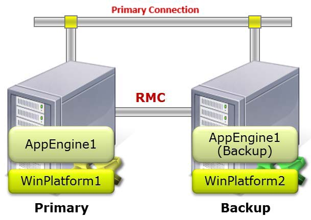
Primary/Backup topology diagram. The Primary server hosts AppEngine1 on WinPlatform1. The Backup server hosts AppEngine1 (Backup) on WinPlatform2. Both servers are connected by two links: the Primary Connection (shared Plant network) and the RMC (dedicated Redundancy Message Channel for heartbeat monitoring and failover coordination). (page 10-3)
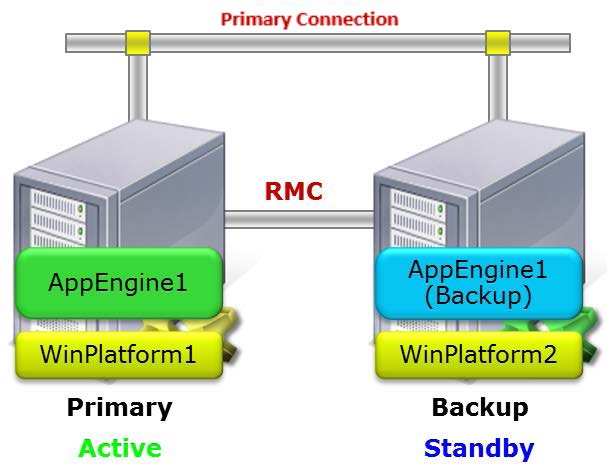
Active/Standby runtime topology. After deployment, the Primary server becomes Active (green label) — the object executing functions. The Backup server becomes Standby (blue label) — monitoring the Active engine via heartbeat pings through the RMC. The RMC link carries heartbeat signals, checkpoint data, and synchronization information between the pair. (page 10-5)
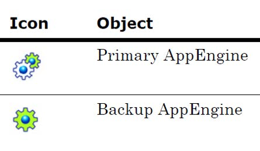
AppEngine redundancy icons. The Primary AppEngine is represented by a dual interlocking gear icon (blue and green), while the Backup AppEngine is shown as a single green gear icon. These icons appear in the Deployment view to visually distinguish primary and backup engine instances. (page 10-5)
Important — One-to-One Topology: Plant supports a one-to-one topology in which the computers hosting the Primary and Backup object sets must be connected by crossover cable and have fixed IP addresses. For data acquisition, the Primary/Backup DI objects must be separately created, configured, and deployed. Also, install and configure the primary OPC server on the backup engine node.
29.3 Engine Restart After Failure
Reference: page 10-5
An AppEngine will restart automatically after an engine failure such as a crash or hang. If the engine is redundant, it will synchronize with its redundant partner, and running applications will resume. Engine restart on failure is automatic and is not user-configurable.
In the AppEngine redundancy environment, the Active and Standby objects monitor each other's statuses and switch during a failover situation. During a failover, when an Active engine fails, it restarts and the Standby engine becomes active. The Active engine then turns to the standby mode.
29.4 Configuring Redundancy
Reference: page 10-6
You configure redundancy in AppEngine/WinPlatform objects using their Object Editors. The redundancy-related parameters in the AppEngine Object Editor are located on the Redundancy and General tabs.
29.4.1 Steps to Create AppEngine Redundancy
In the Primary AppEngine, select the Enable Redundancy check box on the Redundancy tab.
Configure the remaining redundancy parameters as needed.
On the General tab, set the Engine Failure Timeout option to 2000 milliseconds. You may need to tune this parameter between 2000 ms and the default 10000 ms.
Warm Redundancy (System Platform 2023+): Starting in System Platform 2023, Warm Redundancy is enabled by default. When Warm Redundancy is enabled, failover from the Active to the Standby engine occurs much faster. Warm Redundancy starts up and initializes the Standby engine concurrently with the Active engine.
Engine Failure Timeout Note: The actual engine failure time-out is three times the value of this parameter. If you set the parameter to 2000 ms (2 seconds), a failover occurs if the AppEngine fails to communicate with the computer's Bootstrap for 6 seconds. A setting of 10000 ms (10 seconds) can be too long a wait period (30 seconds) for a well-functioning redundancy operation.
29.4.2 Redundancy Deployment Statuses
After you save the configuration and check it into the Galaxy, the icon for the object changes. A Backup AppEngine is created with the same configuration as the Primary object. The redundancy pair can be in one of these deployment states:
Status
Description
Pair Deployed
Both Primary and Backup AppEngines are deployed.
Pair Undeployed
Both Primary and Backup AppEngines are undeployed.
Partial Deployed
Either the Primary or Backup AppEngine is deployed and its partner is not deployed.
Partial Undeployed
Either the Primary or Backup AppEngine is undeployed and its partner is deployed.
29.5 Deploying and Undeploying Redundant AppEngines
Reference: pages 10-7 to 10-9
Primary and Backup AppEngines can be deployed together or individually:
When deployed together, regardless of which object is selected for deployment, the Primary always becomes the Active and the Backup becomes the Standby.
When deployed individually, the first one deployed becomes the Active.
Hosted ApplicationObjects are always deployed to the Active AppEngine. When deploying the first of a redundant pair of AppEngines, you can cascade deploy all objects it hosts.
Warning: If you deploy the Backup AppEngine first and then deploy hosted objects to that AppEngine, make sure the network communication to both target computers is good before deploying the Primary AppEngine. Otherwise, errors occur.
29.5.1 Deployment Condition Matrix
Condition
Deploy Both Primary & Backup
Cascade Deploy Allowed
Backup WinPlatform configured for failover and deployed
Yes
Yes
Backup AppEngine in error state
Yes
Yes
Backup WinPlatform not deployed
No
Yes
Backup WinPlatform not configured for failover and deployed
Yes
Yes
Deploy from Galaxy node
No
Yes
Deploy from WinPlatform hosting Primary
No
Yes
Multiple object selection deploy
No
No
Backup WinPlatform not configured and not deployed
No
Yes
Deploy from Backup AppEngine
Yes
Yes
Deploy from Primary AppEngine
Yes
Yes
29.5.2 Configuration Requirements
Before deploying the Primary and Backup AppEngines, all configuration requirements must be met:
Each AppEngine must be assigned to a separate WinPlatform.
A valid redundancy message channel (RMC) must be configured for each WinPlatform.
To deploy the Primary and Backup together, select Include Redundant Partner in the Deploy dialog box.
29.5.3 Undeploying as a Pair
Select one of the objects in an Application view.
On the Object menu, click Undeploy. The Undeploy dialog box appears.
Select Include Redundant Partner in the Undeploy dialog box and click OK.
Note: Undeploying any objects, including redundant AppEngine pairs, does not uninstall code modules for that object from the hosting computer. Code modules are uninstalled only when the WinPlatform is undeployed.
29.5.4 File Deployment Order
During initial deployment of a redundant pair of AppEngines, files are deployed in the following order:
Code modules and other files for the Primary AppEngine are deployed
Those files for its assigned ApplicationObjects
All of these files are deployed to the Standby AppEngine by the Active engine's WinPlatform using the RMC
29.6 AppEngine Redundancy States
Reference: pages 10-9 to 10-10
Redundant pairs of AppEngines can have one of the following states at runtime:
State
Description
Active
The engine has communication with its partner, schedules and runs deployed objects, sends checkpoint data and subscriber list updates to the Standby.
Active — Standby not Available
The engine cannot achieve communications with its partner. Continues normal execution but cannot send data to the Standby.
Determining Failover Status
Initial state when first started. Attempts communication over RMC, then primary network to determine Active or Standby role.
Standby — Missed Heartbeats
Heartbeat pings are not received from the Active partner, but the maximum missed beats threshold has not been reached.
Standby — Not Ready
Lost communications with partner, or missed checkpoint updates, or new objects deployed that are not yet installed on the Standby.
Standby — Ready
Completed synchronizing code modules and checkpoint data with the Active AppEngine. Monitors for failure via heartbeat pings.
Standby — Sync'ing with Active
Synchronizing code modules with the Active object. After code sync, transitions to Standby-Sync'd Code state.
Standby — Syncing Code
Successfully synchronized all code modules with the Active object.
Standby — Sync'ing Data
All object-related data, including checkpoint and subscriber information, are synchronized. Typically transitions to Standby-Ready.
Switching to Active
Transitional state when a Standby is commanded to become Active.
Switching to Standby
Transitional state when an Active is commanded to become Standby. The engine will be restarted.
Failed
Partner process crashed or was terminated. Can be restarted using System Management Console / Platform Manager.
Unknown
Communication loss occurred or partner is stopped, shutdown, or undeployed.
Lab 18 — Configuring Application Redundancy
Source: AVEVA Application Server 2023 Training Manual, Module 10 Lab 18
Hands-on lab covering Windows network configuration for RMC, $WinPlatform redundancy configuration, $AppEngine redundancy enablement, deployment of redundant engines, and forced failover observation. (pages 10-11 to 10-29)
29.7 Lab 18 Overview
Reference: Lab 18 Introduction (page 10-11)
In this lab, you will configure a second network connection in Windows for use as the Redundancy Message Channel (RMC). Then, you will configure the Galaxy platforms and engines for redundancy. Finally, you will create the hosting relationship, deploy the changes, and force a failover to confirm the functionality.
Lab Objectives:
Configure a secondary network connection in Windows as the Redundancy Message Channel
Configure $WinPlatform and $AppEngine objects for redundancy
Create a deployment model for redundant engines
Force a failover on a redundant system
Prerequisites: You should have completed previous labs with ProdPlatform and GRPlatform configured, AppEngine1 deployed with hosted objects, and access to two computers (or a two-node training environment). If you are on a single-node network configuration, you will skip this lab.
29.8 Configure Windows for Redundancy — ProdPlatform
Reference: Lab 18 Steps 1–20 (pages 10-12 to 10-17)
In the following steps, you will configure a second network connection in Windows as the Redundancy Message Channel (RMC). You will do this on two computers: first, where ProdPlatform is deployed; second, where GRPlatform is deployed.
Steps 1–3: Open Network Settings on ProdPlatform
Step 1. Connect to the machine where the ProdPlatform is deployed.
Step 2. Open the Network and Internet settings (Start | Settings | Network & Internet).
Step 3. Click Change adapter options.
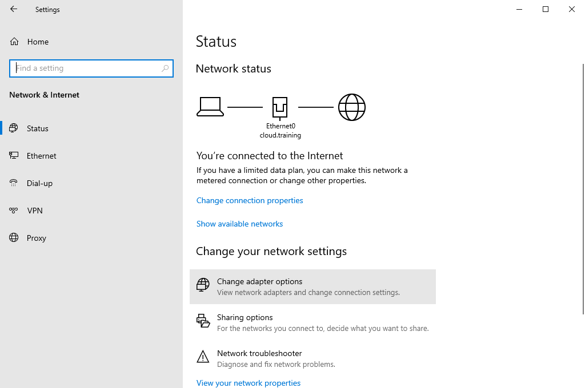
Windows Settings — Network & Internet Status page. The connection diagram shows Ethernet0 cloud.training connected to the Internet. Click Change adapter options under "Change your network settings" to open the Network Connections window (page 10-12).
Steps 4–5: Rename Ethernet0 to "Plant"
Step 4. The Network Connections window appears. Right-click Ethernet0 and select Rename.
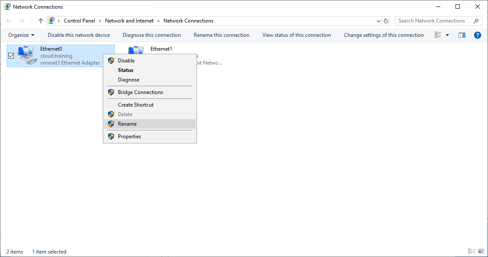
Network Connections window on the ProdPlatform computer. Right-click on Ethernet0 (the VMware vmxnet3 adapter on cloud.training) and select Rename from the context menu (page 10-13).
Step 5. Rename the connection to Plant.
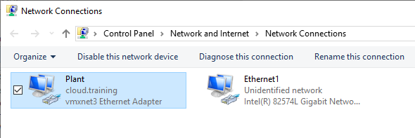
After renaming, Ethernet0 is now displayed as Plant (vmxnet3, cloud.training). The second adapter Ethernet1 is still at its default name with an "Unidentified network" status (page 10-13).
Step 6: Rename Ethernet1 to "RMC"
Step 6. Right-click Ethernet1, which has an Unidentified network, and select Rename.
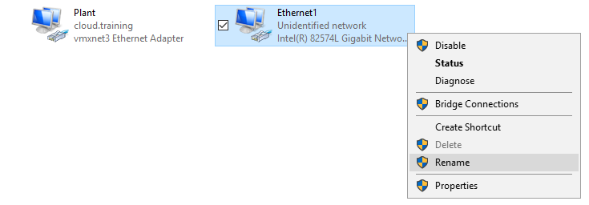
Right-click on Ethernet1 (Intel 82574L Gigabit Network Connection — the physical NIC) and select Rename. This adapter will become the dedicated Redundancy Message Channel (page 10-13).
Note: The network connection may have a different name, such as Local Area Connection, depending upon your network configuration.
Steps 7–8: Rename to "RMC" and Open Properties
Step 7. Rename the connection to RMC.
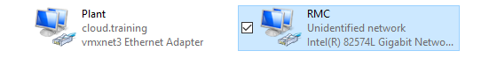
After renaming, the two adapters on the ProdPlatform computer are now clearly labeled: Plant (vmxnet3 VMware adapter) and RMC (Intel Gigabit physical NIC, Unidentified network). The RMC adapter is selected (page 10-14).
Step 8. In the Network Connections window, right-click RMC and select Properties.
Right-click on the RMC adapter and select Properties from the context menu. This opens the RMC Properties dialog where you will configure the TCP/IPv4 settings for the redundancy channel (page 10-14).
Steps 9–10: Select TCP/IPv4
Step 9. In the This connection uses the following items list, select Internet Protocol Version 4 (TCP/IPv4).
Step 10. Click the Properties button.
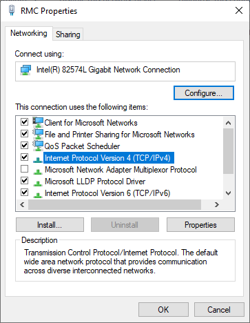
RMC Properties dialog — Networking tab. Internet Protocol Version 4 (TCP/IPv4) is highlighted. Click Properties to configure the static IP address for this redundancy channel (page 10-14).
Steps 11–14: Configure IP Address 192.168.10.1
Step 11. Select the Use the following IP address option.
Step 12. In the IP address field, enter 192.168.10.1.
Step 13. Click in the Subnet mask field to automatically assign the subnet mask.
Step 14. In the bottom-right of the dialog box, click the Advanced button.
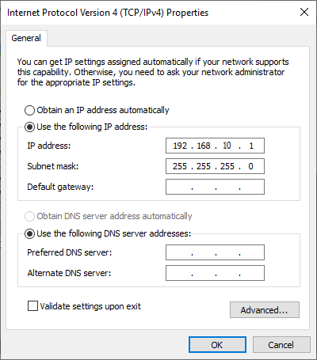
Internet Protocol Version 4 (TCP/IPv4) Properties for the RMC connection on ProdPlatform. Static IP is set to 192.168.10.1 with subnet mask 255.255.255.0. Click Advanced to access DNS registration settings (page 10-15).
Note: In some training environments, your instructor may provide you with an alternate IP address.
Steps 15–20: Disable DNS Registration and Close
Step 15. On the DNS tab, uncheck the Register this connection's addresses in DNS check box.
Step 16. In the Advanced TCP/IP Settings dialog box, click OK.
Step 17. In the TCP/IPv4 Properties dialog box, click OK.
Step 18. In the RMC Properties dialog box, click Close.
Step 19. Close the Network Connections window.
Step 20. Close the Settings window.
Advanced TCP/IP Settings — DNS tab. Uncheck the "Register this connection's addresses in DNS" checkbox. The RMC is a private point-to-point link and should not be registered in DNS. Click OK to confirm (page 10-16).
29.9 Configure Windows for Redundancy — GRPlatform
Reference: Lab 18 Steps 21–39 (pages 10-17 to 10-21)
In the following steps, you will repeat the same configuration for the GRPlatform that you just completed on the computer hosting the ProdPlatform.
Steps 21–23: Open Network Settings on GRPlatform
Step 21. Connect to the machine where the GRPlatform is deployed.
Step 22. Open Network and Internet settings (Start | Settings | Network & Internet).
Step 23. Click Change adapter options.
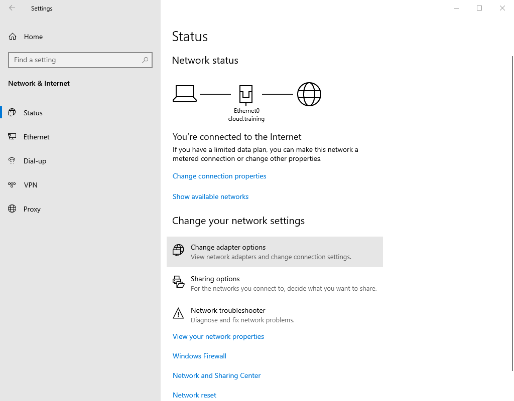
Windows Settings — Network & Internet Status page on the GRPlatform computer. Click Change adapter options to configure the network adapters for the redundancy channel (page 10-17).
Steps 24–26: Rename Adapters on GRPlatform
Step 24. When the Network Connections window appears, right-click Ethernet0 and select Rename.
Step 25. Rename the connection to Plant.
Step 26. Rename the Ethernet1 connection to RMC.
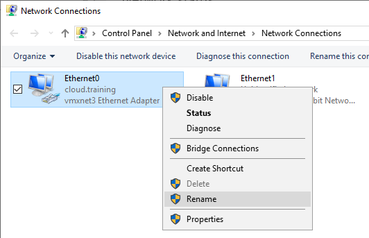
Network Connections on the GRPlatform computer. Right-click on Ethernet0 and select Rename. Rename it to "Plant" (page 10-18).
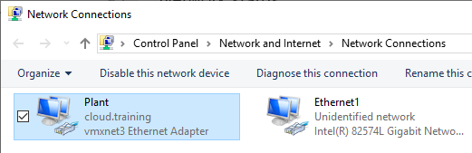
After renaming Ethernet0 to Plant, the second adapter Ethernet1 (Intel Gigabit, Unidentified network) is visible. Rename it to "RMC" (page 10-18).
Steps 27–29: Open RMC Properties on GRPlatform
Step 27. In the Network Connections window, right-click RMC and select Properties.
Step 28. In the This connection uses the following items list, select Internet Protocol Version 4 (TCP/IPv4).
Step 29. Click the Properties button.
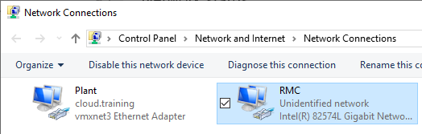
GRPlatform Network Connections after renaming both adapters to Plant and RMC. The RMC adapter (Intel Gigabit) is selected and will be configured for the redundancy IP address (page 10-19).
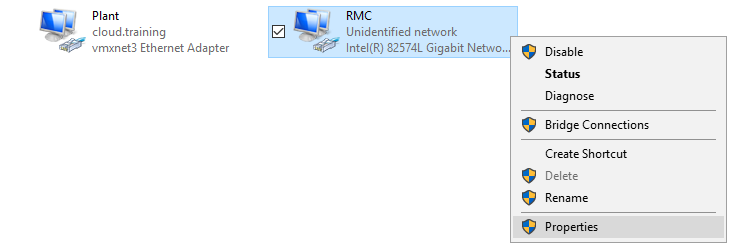
RMC Properties dialog on the GRPlatform computer. Select Internet Protocol Version 4 (TCP/IPv4) and click Properties to configure the static IP address (page 10-19).
Steps 30–33: Configure IP Address 192.168.10.2
Step 30. Select the Use the following IP address option.
Step 31. In the IP address field, enter 192.168.10.2.
Step 32. Click in the Subnet mask field to automatically assign the subnet mask.
Step 33. In the bottom-right of the dialog box, click the Advanced button.
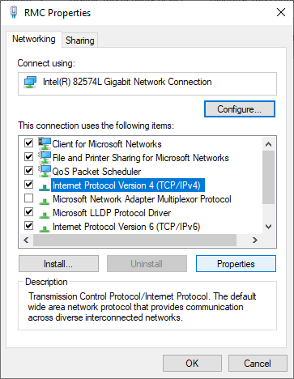
TCP/IPv4 Properties for the RMC connection on GRPlatform. Static IP is set to 192.168.10.2 with subnet mask 255.255.255.0. This pairs with the ProdPlatform's 192.168.10.1 address on the same subnet for point-to-point RMC communication (page 10-20).
Steps 34–39: Disable DNS Registration and Close
Step 34. On the DNS tab, uncheck the Register this connection's addresses in DNS check box.
Step 35. In the Advanced TCP/IP Settings dialog box, click OK.
Step 36. In the TCP/IPv4 Properties dialog box, click OK.
Step 37. In the RMC Properties dialog box, click Close.
Step 38. Close the Network Connections window.
Step 39. Close the Settings window.
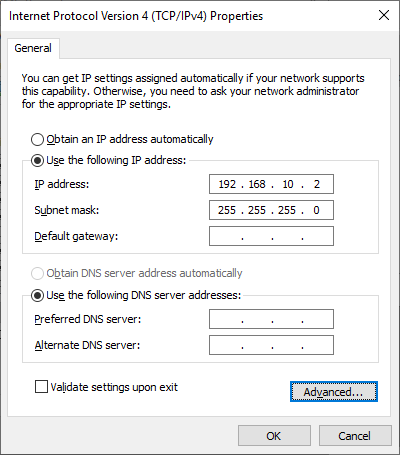
Advanced TCP/IP Settings — DNS tab on the GRPlatform computer. Uncheck "Register this connection's addresses in DNS" and click OK. This completes the RMC network configuration on the second computer (page 10-20).
RMC IP Configuration Summary:
Computer
RMC Adapter
IP Address
Subnet Mask
ProdPlatform
RMC (Intel 82574L)
192.168.10.1
255.255.255.0
GRPlatform
RMC (Intel 82574L)
192.168.10.2
255.255.255.0
29.10 Configure the Platforms for Redundancy in the IDE
Reference: Lab 18 Steps 40–46 (pages 10-22 to 10-23)
You will now return to the IDE and configure the platforms for redundancy.
Note: You must be logged in as a user other than the student account.
Step 40. Verify you are on the primary development computer node.
Step 41. In the IDE, Deployment view, open the ProdPlatform configuration editor.
Step 42. On the General tab, Redundancy area, Local redundancy message IP Address field, enter 192.168.10.1, which is the IP address you configured for the RMC network on ProdPlatform.
Step 43. Save and close and check in with an appropriate comment.
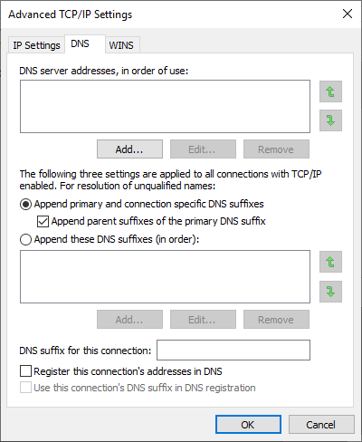
ProdPlatform configuration editor — General tab. The Redundancy section shows the Local redundancy message IP Address set to 192.168.10.1. The redundancy ports are configured as: message port 30001, primary port 30000, store forward redundancy port 32568. (page 10-22)
Step 44. In the IDE, Deployment view, open the GRPlatform configuration editor.
Step 45. On the General tab, Redundancy area, Local redundancy message IP Address field, enter 192.168.10.2, which is the IP address you configured for the RMC network on GRPlatform.
Step 46. Save and close and check in with an appropriate comment.
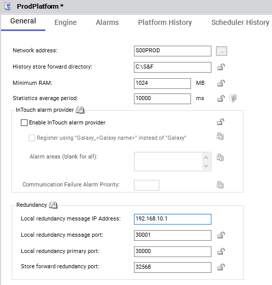
GRPlatform configuration editor — General tab. The Redundancy section shows the Local redundancy message IP Address set to 192.168.10.2. The same port configuration applies: message port 30001, primary port 30000, store forward redundancy port 32568. (page 10-23)
The Deployment view now displays that both platforms have pending changes. You will redeploy the platforms later in this lab.
29.11 Configure AppEngine1 for Redundancy
Reference: Lab 18 Steps 47–55 (pages 10-24 to 10-25)
You will now configure AppEngine1 for redundancy. Since AppEngine1 is currently deployed, you must first undeploy it.
Step 47. Right-click AppEngine1 and select Undeploy.
Step 48. In the Undeploy dialog box, leave the default options and click Undeploy.
Step 49. When the Undeploying Objects progress is complete, click Close.
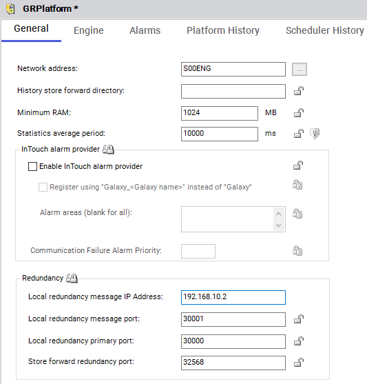
Deployment view showing the TrainingGalaxy hierarchy before undeploying AppEngine1. The tree contains Unassigned Host, GRPlatform, and ProdPlatform with AppEngine1 and its hosted objects (page 10-24).
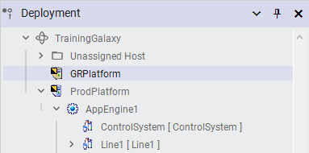
Deployment view with ProdPlatform expanded, showing AppEngine1 and its child objects: ControlSystem, Line1, and other hosted objects. This is the state before undeploying (page 10-24).
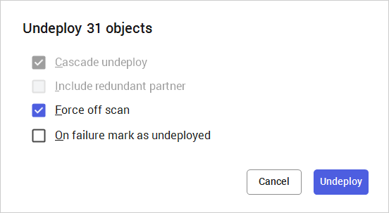
Undeploy dialog for 31 objects. The default options are: Cascade undeploy checked (ensures all dependent objects are also undeployed), Include redundant partner unchecked, and Force off scan checked. Click Undeploy to proceed (page 10-24).
Step 50. Open the AppEngine1 configuration editor.
Step 51. On the Redundancy tab, check the Enable redundancy check box.
Step 52. Leave the default values and click Save and Close, and then check in the engine with an appropriate comment.
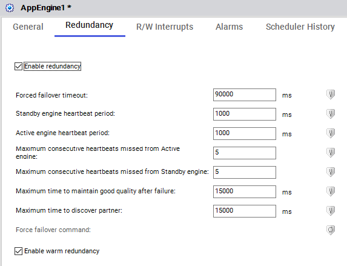
AppEngine1 configuration editor — Redundancy tab. The Enable redundancy checkbox is checked. Default redundancy parameters are auto-populated: Forced failover timeout = 90000 ms, Standby/Active heartbeat periods = 1000 ms each, Maximum consecutive heartbeats missed = 5, Maximum time to discover partner = 15000 ms, and Enable warm redundancy is checked (page 10-24).
Step 53. Expand the Unassigned Host folder to reveal the new backup application engine instance. This was automatically created when redundancy was enabled in AppEngine1.
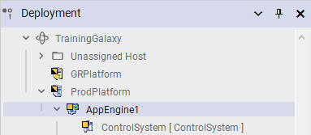
Deployment view after enabling redundancy. The Unassigned Host folder is expanded (circled red), revealing the automatically created AppEngine1 (Backup) instance. This backup engine was generated by the Plant infrastructure when redundancy was enabled on AppEngine1 (page 10-25).
You will now have GRPlatform host the new AppEngine1 (Backup) object and redeploy the platforms.
Step 54. Assign AppEngine1 (Backup) to GRPlatform.
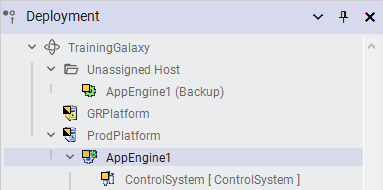
After dragging AppEngine1 (Backup) from Unassigned Host to GRPlatform. The backup engine is now assigned to the GRPlatform, establishing the redundant hosting relationship (page 10-25).
Step 55. In the Deployment view, redeploy both platforms.
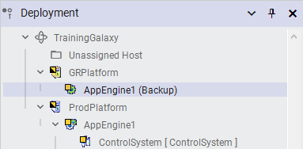
Final deployment hierarchy showing AppEngine1 (Backup) nested under GRPlatform and AppEngine1 under ProdPlatform with its ControlSystem child object. The Unassigned Host folder is now collapsed (page 10-25).
29.12 Deploy Redundant Engines
Reference: Lab 18 Steps 56–59 (pages 10-26 to 10-27)
You will now deploy the application engines using the Include redundant partner option.
Step 56. In the Deployment view, right-click AppEngine1 and select Deploy.
Step 57. In the Deploy dialog box, check the Include redundant partner check box.
Step 58. Click Deploy.
Step 59. When the Deploying Objects progress is complete, click Close.
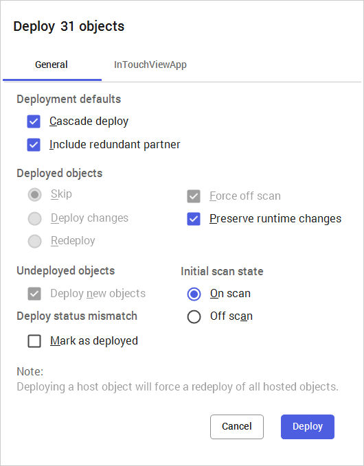
Deploy dialog for 31 objects. The critical setting is the Include redundant partner checkbox (circled in red) — this ensures both the Primary and Backup AppEngines are deployed together. Other settings: Cascade deploy checked, Force off scan checked, Preserve runtime changes checked, Deploy new objects checked, Initial scan state On scan. Click Deploy to proceed (page 10-26).
The Deployment view now displays that all objects have been deployed.
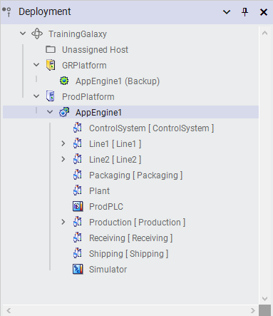
Deployment view after successful deployment. AppEngine1 is on ProdPlatform with all hosted objects (ControlSystem, Line1, Line2, Packaging, Plant, ProdPLC, Production, Receiving, Shipping, Simulator). AppEngine1 (Backup) is on GRPlatform with a green standby icon (page 10-27).
29.13 View Redundancy Functionality in Runtime
Reference: Lab 18 Steps 60–65 (pages 10-27 to 10-28)
You will now use Object Viewer and observe selected AppEngine1 attributes in the runtime environment. You will then force a failover and observe the changes.
Step 60. Return to Object Viewer.
Step 61. Close Object Viewer.
Step 62. In the IDE, Deployment view, view AppEngine1 in Object Viewer.
Step 63. Load the watch list you saved earlier.
Step 64. Click the AppEngine tab, and then add the following attributes to the watch window:
Host
Redundancy.FailoverOccurred
Redundancy.ForceFailoverCmd
Redundancy.Identity
Redundancy.PartnerPlatform
Redundancy.PartnerStatus
Redundancy.Status
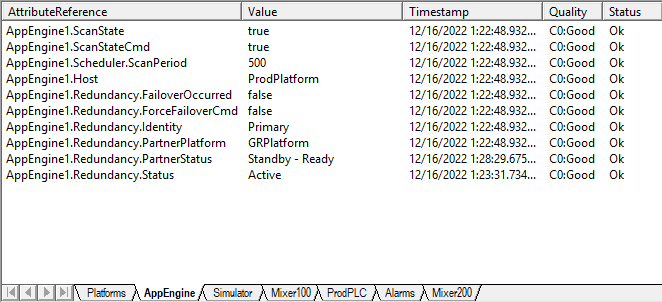
Watch window showing AppEngine1 redundancy attributes before the forced failover. Key values: Host = ProdPlatform, Identity = Primary, PartnerPlatform = GRPlatform, PartnerStatus = Standby - Ready, Status = Active. The ProdPlatform is currently the Active engine and GRPlatform is in Standby-Ready mode (page 10-28).
The watch window displays that ProdPlatform is currently hosting AppEngine1 and the redundancy status is Active. Additionally, the GRPlatform is the partner platform and is currently in a Standby - Ready mode.
Step 65. Save the watch list.
29.14 Force a Failover
Reference: Lab 18 Steps 66–68 (pages 10-28 to 10-29)
You will now force a failover to trigger redundancy and observe the changes.
Step 66. In the watch window, double-click AppEngine1.Redundancy.ForceFailoverCmd.
Step 67. Click the True option, and then click OK.
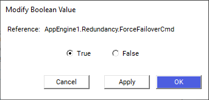
Modify Boolean Value dialog for AppEngine1.Redundancy.ForceFailoverCmd. Select True and click OK to force a failover. This command causes the Standby engine (GRPlatform) to become the Active engine, while the current Active engine (ProdPlatform) transitions to Standby (page 10-28).
Step 68. After the failover, observe the changes in the watch window and the Deployment view:
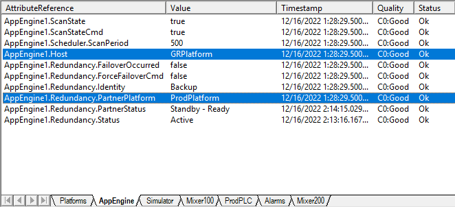
Watch window showing AppEngine1 attributes after the forced failover. Key changes: Host = GRPlatform, Identity = Backup, PartnerPlatform = ProdPlatform, PartnerStatus = Standby - Ready, Status = Active. The failover has completed — GRPlatform is now the Active host and ProdPlatform has become the Standby partner (page 10-29).
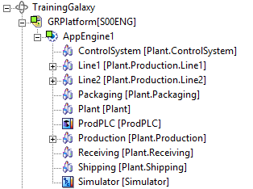
Object Viewer tree view after failover. AppEngine1 is now listed under GRPlatform[S00ENG] with all its hosted objects (ControlSystem, Line1, Line2, Packaging, Plant, ProdPLC, Production, Receiving, Shipping, Simulator). Collapse ProdPlatform and expand GRPlatform to confirm the failover was successful (page 10-29).
Failover Summary:
Attribute
Before Failover
After Failover
Host
ProdPlatform
GRPlatform
Identity
Primary
Backup
Status
Active
Active
PartnerPlatform
GRPlatform
ProdPlatform
PartnerStatus
Standby - Ready
Standby - Ready
The failover demonstrated that redundancy is working correctly: when ForceFailoverCmd was set to True, the Standby engine (GRPlatform) seamlessly took over as the Active engine, and the original Active engine (ProdPlatform) transitioned to Standby mode. All hosted objects migrated to the new Active engine.
29.15 Lab 18 — Key Takeaways
What You Accomplished in Lab 18:
Configured Windows networking — Renamed network adapters to "Plant" and "RMC" on both computers, and assigned static IP addresses (192.168.10.1 and 192.168.10.2) on the RMC channel.
Configured platforms for redundancy — Set the Local redundancy message IP Address on both $WinPlatform objects in the IDE to match the RMC IP addresses.
Enabled AppEngine redundancy — Checked "Enable redundancy" on AppEngine1, which automatically created a backup engine instance.
Assigned backup to GRPlatform — Moved the auto-created AppEngine1 (Backup) from Unassigned Host to GRPlatform.
Deployed redundant pair — Used "Include redundant partner" to deploy both Primary and Backup engines simultaneously.
Observed redundancy in runtime — Used Object Viewer to monitor Active/Standby states, Identity, and PartnerPlatform attributes.
Forced a failover — Set ForceFailoverCmd to True and observed the engine migration from ProdPlatform to GRPlatform.
29.16 Review Quiz
📝 Knowledge Check
1. What two types of redundancy does Application Server support?
AppEngine redundancy (for computer or software failures) and Data Acquisition redundancy (for PLC communication failures).
2. How many network cards must each production computer have for AppEngine redundancy?
A minimum of two: one for the Plant network and one for the dedicated Redundancy Message Channel (RMC).
3. What is the relationship between configuration-time (Primary/Backup) and runtime (Active/Standby) objects?
The relationship is not static. Either the Primary or Backup object can be the Active object at any time. When one becomes Active, the other automatically becomes Standby.
4. What happens when you enable redundancy on an AppEngine?
The Plant infrastructure automatically creates a Backup AppEngine with the same configuration as the Primary object. The backup appears under the Unassigned Host folder.
5. How does the actual Engine Failure Timeout compare to the configured value?
The actual timeout is three times the configured value. A setting of 2000 ms results in a 6-second timeout before failover occurs.
6. What does "Warm Redundancy" do, and when was it introduced?
Warm Redundancy (introduced in System Platform 2023) starts up and initializes the Standby engine concurrently with the Active engine, resulting in much faster failover times. It is enabled by default.
7. What attribute do you use to force a manual failover?
AppEngine1.Redundancy.ForceFailoverCmd — set it to True to trigger a forced failover.
8. When deploying redundant engines, what checkbox must you select in the Deploy dialog?
Include redundant partner — this ensures both the Primary and Backup AppEngines are deployed together.